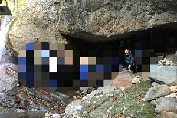

高校
進学実績・自由闊達な校風・古い歴史や伝統に惹かれ、県外の栃木県立栃木高等学校に入学する。

部活動は新しいことに挑戦したいという気持ちと先輩の言葉に惹かれ、
山岳部に入部した。山岳部では毎週５日間の練習に
加え、年に６・７回ほど大会や合宿などを行っていた。
大会や合宿では２泊３日・３泊４日で山にテントを張り
、キャンプをしながら、山登りや競技を行った。
高校２年時には、高校独自の語学プログラムであるボストン研修に
参加し、アメリカ・ボストンのタフツ大学に約１週間留学した。
午前中は世界各国からの留学生とともに英語のクラスに参加し
、午後はボストン市内の観光・ハーバード大学やMITなどの現地大学の見学・現地の人や留学生との交流を行った。
 栃木高校では体育祭や学校祭に加え、３１キロ耐久レースなど特色のある
栃木高校では体育祭や学校祭に加え、３１キロ耐久レースなど特色のある
学校行事がたくさんあった。また、スーパーサイエンスハイスクール
(SSH)の取り組みとして、大学教授の講義を受けたり、実験を行ったり、企業訪問などを行った。
学業面では、計画性を持って勉強に取り組み、学年でも上位の成績だった。
また、周りの人や同じ大学を目指す仲間と教え合うなど切磋琢磨し、知識の定着やモチベーション管理を行った。
そして、第一志望であった早稲田大学商学部を目指して勉強に取り組み、合格を果たした。